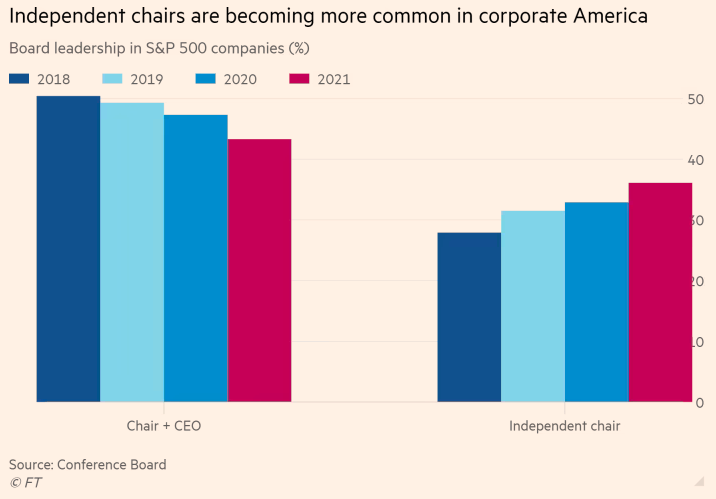

Chief among all the succession questions on Wall Street is what will happen when Jamie Dimon relinquishes the top job at JPMorgan. Last week, the bank offered a rare glimpse of its preparations in a securities filing that said a “substantial majority” of investors wanted him to stay on as non-executive chair when he steps down as chief executive.
If he does stick around, it would mark the first time JPMorgan has split the roles of chair and CEO since 2006, when Dimon added the role of chairing the board of directors to the responsibilities he assumed upon being made the bank’s top executive a year earlier.
JPMorgan did not divulge whether such a split would be permanent, although it did say that many of its shareholders had a “general preference” for the role to be separated. If the lender were to combine the roles again in the future, it would be going against the prevailing trend in corporate America, where investors are increasingly demanding a strong individual serve as non-executive chair as a counterweight to the CEO.
US companies have been outliers among their multinational peers for allowing so many top executives to also chair the boards to which they answer. As recently as 2017, most S&P 500 companies combined the CEO and chair positions, giving the US a reputation for all-powerful “imperial CEOs”.
That figure dropped to 43 per cent in 2021, a record low, according to the Conference Board. Meanwhile, the number of independent chairs — those who have not previously been CEO of the same company — hit 36 per cent, a record high.
Charles Elson, a corporate governance expert at the University of Delaware, described the shift away from the dual role as “historic”, noting that since the Great Depression many CEOs have treated company directors as de facto advisers. But following years of pressure from investors, “the trend for the split will be predominant”, he said.
The US is still significantly behind Europe, according to ISS Corporate Solutions, a data provider. Out of the companies it covers in western Europe — mainly groups with large market capitalisations in Belgium, France, the Netherlands and Luxembourg — 29 per cent do not split the role. In Germany, Austria and Switzerland, it is just 2.7 per cent, while the figure in the UK and Ireland is 2 per cent.
And combining the role of CEO and chair is still the dominant model at Wall Street banks. JPMorgan’s main rivals — Morgan Stanley, Bank of America and Goldman Sachs — all have boards of directors that are chaired by the CEO.
In recent years, JPMorgan has fended off investor pressure to split the chair and CEO role. In 2021, 48 per cent of JPMorgan investors supported a shareholder proposal calling for separate roles, including big asset managers American Funds and Invesco. That was up from 42 per cent endorsing a split in 2020.
Timothy Smith, a senior adviser at Boston Trust Walden, a US asset manager with a stake in JPMorgan, said the bank had “consistently resisted the proposed change to separate the roles of chair and CEO”, adding: “It is significant that the board states in the proxy [filing] that they are considering making the change.”
JPMorgan declined to comment beyond the filing.
Bank of America kept the roles combined after seeing off a substantial investor rebellion in 2015, while Wells Fargo in 2016 separated its chair and CEO roles following a fake accounts scandal.
Jeffery Harte, a senior research analyst at Piper Sandler, said most bank investors would prefer the roles to be separated “just from a conflict-of-interest standpoint” and that he expects things to change. “I think a lot of banks are [separating] or will look at that once the current CEO’s out of the picture.”
Investor pressure is not the only factor driving the shift. Expanding obligations for chief executives, from the demands of day-to-day management to making decisions on whether to take a stand on social issues, make it harder for top executives to find time to chair the board as well, said Jane Edison Stevenson, the vice-chair for board and CEO services at Korn Ferry, a consultancy. “The role of the CEO is a meatgrinder today,” she added.
Companies with a joint chief executive and chair are increasingly considering splitting the roles when transitioning to a new CEO, Stevenson said. Another option is for the outgoing CEO to move to executive chair while “someone is groomed to take over the chair role once that transition has occurred”, she said. “Those are the two trends that are starting to emerge.”
Religious groups, environmentalists and progressive activists with stakes in US multinationals have traditionally led the way in agitating for split chair and CEO roles.
Increasingly, however, conservative activists are joining them, and using the same tactic of filing shareholder proposals to push for the split. Conservative organisations have filed proposals this year demanding chair and CEO splits at Coca-Cola and Goldman Sachs.
The pressure from conservative activists has befuddled proxy advisers, some of whom are concerned that such groups want to dilute other investors’ environmental, social and governance agendas. Glass Lewis has recommended shareholders abstain from this year’s conservative-backed proposals asking for the chair and CEO role to be separated at Coca-Cola and Goldman Sachs.
“Generally speaking, we would advise shareholders to vote in favour of this resolution,” Glass Lewis said in a report last week. But in this case, “we are concerned that support for this resolution would buoy the proponent’s arguments and . . . advance a narrative that may contradict that of investors concerned about companies’ ESG performance”.